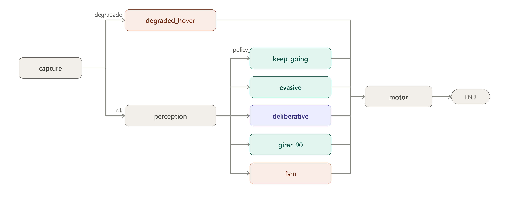

5. Arquitectura del lazo táctico¶
5.0 Escaneo espacial pre-vuelo (spatial_scan)¶
Antes de que el grafo de decisión empiece a ejecutarse, main.py llama de forma bloqueante a spatial_scan() (src/agents/spatial_scan.py). Esta función no es un nodo del StateGraph: se ejecuta una sola vez, entre la conexión con AirSim y la construcción del estado inicial del grafo.
El escaneo realiza un barrido de yaw en el lugar (sin traslación) hacia un conjunto de rumbos equiespaciados alrededor del rumbo inicial, captura un fotograma en cada rumbo tras un breve período de asentamiento y envía todas las imágenes en una única consulta al VLM. El modelo devuelve un contexto cualitativo del entorno visible desde el punto de despegue (obstáculos prominentes, corredores potenciales, densidad general de la escena). Este contexto es advisory, no safety-critical: el ObstacleField por ciclo sigue siendo la única autoridad de seguridad una vez que el dron está en movimiento.
Si el VLM no responde dentro del watchdog del escaneo, o devuelve una respuesta no parseable, la misión arranca igualmente sin contexto inicial — un VLM caído nunca impide el despegue. Al igual que el resto del sistema de percepción (cap. 6), el escaneo pre-vuelo opera exclusivamente sobre fotogramas RGB monoculares y nunca consulta el canal de profundidad del simulador.
La latencia de spatial_scan es un costo de inicialización de única vez, no un costo por ciclo; se mide y registra separadamente del presupuesto de latencia táctica (§10.2).
5.1 Visión general del lazo¶
El lazo descrito en este capítulo se ejecuta sobre el entorno de simulación construido y validado en el capítulo 3 (Unreal Engine 5.5 con Cosys-AirSim), ejecutando los manifiestos compilados previamente por la estación terrena (capítulo 4). El sistema implementado es un grafo de decisión por ciclo (StateGraph de LangGraph, src/agents/graph.py) que se ejecuta a una frecuencia objetivo de LOOP_HZ (5–10 Hz según la resolución de captura elegida).
El grafo se compila una sola vez al inicio de la misión y el bucle externo de main.py lo invoca con graph.invoke() en cada ciclo. El grafo no tiene aristas de retorno: es acíclico por diseño. La naturaleza cíclica de la navegación la aporta el bucle externo, no el grafo. Esta distinción importa porque LangGraph construye los canales del estado a partir del TypedDict declarado (DroneState, §5.2): cualquier clave que un nodo escriba pero no esté declarada en ese schema es descartada en silencio al finalizar graph.invoke(), y por lo tanto no persiste entre ciclos. Esta es la causa raíz de al menos cuatro bugs históricos del sistema (ver §5.2).
La estructura actual del grafo (cada ciclo recorre los nodos en este orden), es la siguiente:

5.2 El estado compartido: DroneState¶
El estado que circula entre los nodos es un TypedDict llamado DroneState (graph.py). Es el único canal de comunicación entre nodos: ningún nodo importa funciones de otro ni mantiene estado propio más allá de lo que declara aquí. La tabla siguiente describe los campos clave y su rol en el sistema.
Datos sensoriales:
| Campo | Tipo | Descripción |
|---|---|---|
rgb_image |
ndarray |
Fotograma RGB del ciclo actual, producido por capture_node |
prev_image |
ndarray |
Fotograma del ciclo anterior, usado por FlowTTCEstimator |
frame_history |
List[ndarray] |
Ring buffer de los últimos VLM_FRAME_HISTORY_SIZE fotogramas (default 2: instantes t y t-1) para el VLM |
frame_history_ts |
List[float] |
Timestamps reales de captura (reloj del simulador) de cada frame de frame_history, índice a índice |
telemetry |
Dict |
Posición NED, velocidad, orientación (pitch/roll/yaw), colisión, timestamp y source del ciclo actual |
prev_telemetry |
Dict |
Telemetría del ciclo anterior, usada por el estimador de flujo óptico |
degraded |
bool |
True si AirSim no respondió este ciclo (rgb_image is None o source != "airsim") |
Percepción:
| Campo | Tipo | Descripción |
|---|---|---|
obstacle_field |
ObstacleField |
Contrato único de percepción: estado de los tres sectores (centro/izquierda/derecha) con ocupación, TTC y flag de bloqueo por sector (cap. 6) |
estimated_ttc |
float |
TTC mínimo entre todos los sectores, derivado de obstacle_field.min_ttc(), para display y logging |
scene_summary |
str |
Texto compacto del ObstacleField para el prompt del VLM |
Decisión y control:
| Campo | Tipo | Descripción |
|---|---|---|
next_action |
str |
Macro-acción elegida por el nodo de política activo este ciclo |
velocity_command |
Dict |
Comando cinemático {macro_action, vx, vy, vz, yaw_rate, target_yaw, rationale} listo para motor_node |
route |
str |
Nodo que produjo el comando: "reactive", "evasive", "deliberative", "girar_90", "fsm", "degraded" |
flight_status |
str |
Estado textual de la misión para logging y overlay |
Guiado a waypoint:
| Campo | Tipo | Descripción |
|---|---|---|
waypoints |
List[Dict] |
Lista de waypoints del manifiesto (x/y/z/label) |
current_wp_index |
int |
Índice del waypoint activo en la lista |
target_waypoint |
Dict |
Waypoint activo, copiado de la lista por WaypointTracker |
waypoint_guidance |
Dict |
Salida de WaypointTracker.compute_guidance(): vx, vy, vz, yaw_rate, distance, bearing_err_deg, target_wp, is_completed |
mission_completed |
bool |
True cuando todos los waypoints fueron alcanzados |
Persistencia de maniobra (anti-flip-flop):
| Campo | Tipo | Descripción |
|---|---|---|
active_maneuver |
str\|None |
Macro-acción de la maniobra comprometida actualmente en ejecución |
maneuver_cycles_left |
int |
Ciclos restantes de la maniobra comprometida |
maneuver_command |
Dict\|None |
Comando cinemático fijo de la maniobra comprometida |
Deliberación y VLM:
| Campo | Tipo | Descripción |
|---|---|---|
deliberations |
List[Dict] |
Registro de todas las consultas al VLM de la misión (de solo agregado: campos nunca se borran, ver §5.10) |
last_deliberation |
Dict\|None |
Última entrada de deliberations, actualizada por motor_node |
slm_request_id |
int\|None |
ID del pedido VLM pendiente en DeliberationService; None si no hay pedido en vuelo |
_deliberation_pending |
bool |
True mientras el lazo espera la respuesta del VLM dentro del watchdog; el llamador salta record_progress() para no penalizar la espera como "atasco" |
_pending_delib_prompt |
str\|None |
Prompt enviado al VLM, guardado para adjuntarlo al registro cuando llegue la respuesta |
_pending_delib_frames |
List\|None |
Frames RAW + timestamps enviados al VLM, guardados para auditoría |
_last_delib_frames |
List\|None |
Canal de una sola pasada hacia FlightLogger: solo tiene contenido en el ciclo exacto en que una deliberación se resuelve; se consume con pop() y nunca se acumula en deliberations |
Lógica de escape de deadlock:
| Campo | Tipo | Descripción |
|---|---|---|
evasion_stuck_cycles |
int |
Ciclos consecutivos sin progresar hacia el waypoint activo (acumulado por WaypointTracker.record_progress()) |
_consecutive_escapes |
int |
Cantidad de escapes verticales consecutivos (GANAR_ALTURA / PERDER_ALTURA) sin progreso horizontal medido |
_escape_locked |
bool |
True cuando el escape vertical se agotó (_consecutive_escapes > MAX_CONSECUTIVE_ESCAPES); el escape queda inhabilitado hasta que haya progreso horizontal real |
_escape_baseline_dist |
float\|None |
Distancia al waypoint en el momento en que se inició el último escape; usada para evaluar si el escape resolvió el atasco |
_escape_reset |
bool |
Señal de flanco (no de nivel): True en el ciclo exacto en que un escape se resuelve, para que main.py llame a WaypointTracker.reset_progress() |
_deadlock_cycles |
int |
Ciclos dentro del estado de atasco duro (acumula mientras el escaneo profundo está activo) |
_deadlock_event |
Dict\|None |
Métricas de resolución del atasco, consumidas por FlightLogger |
Estado del escaneo panorámico profundo (deep_scan):
| Campo | Tipo | Descripción |
|---|---|---|
_scan_phase |
str\|None |
Fase actual: "rotando" | "asentando" | "capturado" | None (no activo) |
_scan_heading_index |
int |
Rumbo actual dentro del barrido (0 a SCAN_HEADING_COUNT_DEEP-1) |
_scan_frames |
List |
Fotogramas capturados hasta ahora: [(heading_deg, rgb_frame, capture_ts)] |
_scan_start_yaw_deg |
float\|None |
Yaw al inicio del barrido, referencia para calcular los rumbos objetivo |
_scan_settle_left |
int |
Ciclos de asentamiento restantes en el rumbo actual |
_deep_scan_request_id |
int\|None |
ID del pedido VLM panorámico pendiente |
Corrección de altitud en hover:
| Campo | Tipo | Descripción |
|---|---|---|
_hover_alt_anchor |
float\|None |
Altitud anclada al primer ciclo de FRENAR; motor_node la usa para corregir la deriva vertical con un controlador P |
Regla de diseño crítica. Todo campo que cruce la frontera entre invocaciones de graph.invoke() debe estar declarado en este TypedDict. LangGraph no lanza error si un nodo escribe una clave no declarada: la descarta en silencio. Esta propiedad causó al menos cuatro bugs documentados: _escape_reset nunca se propagaba (el tracker de atasco nunca se reiniciaba, produciendo un deadlock duro de 76 ciclos), _escape_locked se perdía (reseteando el escape agotado en un ciclo límite de período 3), _delib_baseline nunca acumulaba evidencia, e inject_corner nunca se producía.
5.3 Routers condicionales¶
degraded_router¶
Router de un solo bit, ejecutado inmediatamente después de capture_node:
- Si
state["degraded"]esTrue→ ruta"degraded_hover" - En caso contrario → ruta
"perception"
policy_router¶
Es el corazón de la arquitectura. Ejecuta la decisión táctica completa en un único paso condicional, reemplazando la cadena de tres routers que existía antes (que producía la invocación doble al VLM por ciclo). La lógica es la siguiente, en orden de prioridad:
1. Selección de brazo (AGENT_ARM). Si el brazo configurado es "reactive", el router va directo a keep_going sin evaluar percepción. Si es "fsm", va directo a fsm. Esto permite comparaciones factoriales limpias entre los tres brazos (§5.11).
2. Continuidad de deliberación en vuelo. Si slm_request_id is not None (hay un pedido al VLM en vuelo), el router siempre va a "deliberative", independientemente del TTC actual. Sin esta regla, el pedido queda huérfano: ningún nodo vuelve a entrar a deliberative_node para resolverlo, _deliberation_pending nunca vuelve a False, y el detector de atasco queda desactivado para el resto de la misión.
3. Persistencia de maniobra. Si active_maneuver está activo, maneuver_cycles_left > 0 y min_ttc > TTC_EVASION_THRESHOLD, el router va a "evasive" para continuar la maniobra comprometida. La condición de TTC garantiza que una emergencia real sí la interrumpa.
4. Escape de atasco. Si evasion_stuck_cycles >= effective_stall_threshold():
- Si además evasion_stuck_cycles >= hard_stall_threshold() (factor 3×, atasco duro) o has_open_corridor(field, guidance) es False → "deliberative" (activa el mecanismo de escape, §5.10).
5. Peligro crítico inminente. Si center_ttc <= TTC_EVASION_THRESHOLD (3.2 s) o el centro está bloqueado con center_ttc <= TTC_SAFE_THRESHOLD (4.6 s):
- Si blocked_fraction() > FOV_BLOCKED_THRESHOLD (0.6) → "girar_90" (bypass determinista de bloqueo total de FOV).
- En caso contrario → "deliberative" (consulta al VLM para decisión con contexto).
6. Advertencia de proximidad. Si el centro está bloqueado o min_ttc <= TTC_SAFE_THRESHOLD → "evasive" (corrección lateral rápida sin consultar el VLM).
7. Camino despejado. Default → "keep_going".
Los tres umbrales de TTC son variables de entorno (TTC_EVASION_THRESHOLD=3.2, TTC_SAFE_THRESHOLD=4.6, FOV_BLOCKED_THRESHOLD=0.6) calibrados con datos de vuelo real (2026-0824).
5.4 Nodo capture¶
Entradas: cliente AirSim inyectado (singleton por proceso).
Salidas: rgb_image, telemetry, degraded, frame_history, frame_history_ts, prev_image, prev_telemetry.
Copia el frame y la telemetría del ciclo anterior a prev_image / prev_telemetry, luego llama a airsim_client.capture() para obtener el nuevo par imagen + telemetría. Si la imagen es None o telemetry["source"] != "airsim", marca degraded = True y omite la actualización del ring buffer (un ciclo degradado no sobreescribe los frames válidos anteriores).
En modo normal, agrega el nuevo frame (y su timestamp real de captura del simulador) al ring buffer frame_history / frame_history_ts y lo trunca al tamaño VLM_FRAME_HISTORY_SIZE (default 2). El ring buffer proporciona al VLM el contexto temporal de dos instantes consecutivos, lo que le permite inferir dirección de movimiento a partir de la secuencia de fotogramas.
5.5 Nodo degraded_hover¶
Activación: degraded_router cuando degraded = True.
Salidas: next_action = "FRENAR", route = "degraded", flight_status = "degradado".
Emite un comando FRENAR sin consultar percepción ni deliberación. El diseño no sustituye el dato faltante de AirSim por un dato sintético plausible: la razón es la misma que motiva el capítulo 9 — un dato sintético es indistinguible de un dato real para el resto del sistema y esconde exactamente el tipo de fallo silencioso que este trabajo documenta.
5.6 Nodo perception¶
Entradas: rgb_image, prev_image, telemetry, prev_telemetry.
Salidas: obstacle_field, estimated_ttc, scene_summary.
Invoca FlowTTCEstimator.estimate() con el par de frames consecutivos y la telemetría de ambos ciclos. El estimador produce un ObstacleField con tres sectores (centro, izquierda, derecha), cada uno con ocupación estimada por flujo óptico, TTC calculado y flag de bloqueo (cap. 6). El nodo escribe además estimated_ttc = obstacle_field.min_ttc() (el TTC mínimo entre sectores, usado directamente por policy_router) y scene_summary = obstacle_field.summary_text() (texto compacto para el prompt del VLM).
El ObstacleField es el único objeto que consumen el router de política, el nodo de evasión, el nodo deliberativo y la FSM. Ningún consumidor accede a campos crudos de flujo óptico.
5.7 Nodo keep_going¶
Función: reactive_node en src/agents/reactive.py.
Activación: camino despejado (TTC alto, sin atasco) o brazo AGENT_ARM=reactive.
Salidas: next_action, velocity_command, route = "reactive".
Es el nodo más barato del grafo (costo de cómputo nulo: solo lee waypoint_guidance). Tres casos:
- Misión completada (
mission_completedoguidance["is_completed"]): emiteFRENARyflight_status = "mision_completada". - Waypoint activo disponible: toma directamente los valores de
waypoint_guidanceproducidos porWaypointTracker.compute_guidance()(§5.14) —vx,vy,vz,yaw_rateya están calculados para seguir la trayectoria hacia el waypoint — y emiteMANTENER_RUMBO. - Sin waypoints (fallback): avanza a
REACTIVE_FORWARD_SPEED(default 5 m/s) con corrección vertical-0.1 * vz_actualpara amortiguar deriva vertical.
5.8 Nodo evasive¶
Función: evasive_node en src/agents/evasive.py.
Activación: TTC en ventana de advertencia (TTC_SAFE_THRESHOLD) o continuación de maniobra comprometida.
Salidas: next_action, velocity_command, route = "evasive", actualización de active_maneuver / maneuver_cycles_left.
Dos modos de operación:
Modo persistencia (anti-flip-flop): si active_maneuver está activo y maneuver_cycles_left > 0, continúa la maniobra comprometida ciclo a ciclo. En cada ciclo recalcula la diferencia de yaw respecto al target_yaw de la maniobra: si |yaw_diff| > 3° aplica un controlador P de yaw (yaw_rate = clamp(0.6 * yaw_diff, ±15°/s)); si el error convergió, pone yaw_rate = 0 y avanza con vx = 0.8 m/s. Decrementa maneuver_cycles_left; cuando llega a cero, limpia active_maneuver.
Modo nueva evasión: compara sector_occupancy("izquierda") con sector_occupancy("derecha"). En caso de empate, desempata por TTC (sector con mayor TTC). Elige EVADIR_IZQUIERDA o EVADIR_DERECHA y llama a action_to_command() con aggressive=True (velocidad de evasión vx = 1.2 m/s).
action_to_command() para evasión lateral calcula target_yaw redondeado al múltiplo de 90° más cercano (_manhattan_snap_yaw), apropiado para la cuadrícula urbana de los escenarios de prueba. El comando resultante tiene yaw_rate = ±EVASION_LATERAL_YAW_RATE (15°/s). La maniobra se compromete durante EVASIVE_MANEUVER_DURATION_S × LOOP_HZ ciclos, guardada en active_maneuver / maneuver_command para que el router de política la respete.
5.9 Nodo girar_90¶
Función: girar_90_node en graph.py.
Activación: policy_router cuando blocked_fraction() > FOV_BLOCKED_THRESHOLD (0.6) — el FOV está tan obstruido que cualquier corrección lateral es inútil.
Salidas: next_action = "GIRAR_90", route = "girar_90", flight_status = "exploracion_yaw", maniobra comprometida.
Genera un giro de 90° sin traslación. El lado del giro lo determina el error de rumbo al waypoint (bearing_err_deg): si el waypoint está a la izquierda, el giro va a la izquierda, y viceversa. Antes del fix de 2026-0824, el giro era siempre a la derecha, lo que en un caso documentado mandó al dron 90° en dirección contraria al waypoint mientras la percepción reportaba el corredor despejado al otro lado.
El comando usa yaw_rate = ±20°/s con target_yaw redondeado a la cuadrícula de 90°. La duración es GIRAR90_DURATION_S (default 1.0 s) × LOOP_HZ ciclos. La maniobra se compromete en active_maneuver / maneuver_cycles_left para que policy_router la complete antes de permitir cualquier otra decisión táctica.
5.10 Nodo deliberative¶
Función: make_deliberative_node(service) en src/agents/deliberative.py. Es el nodo más complejo del grafo.
Activación: TTC crítico, FOV no totalmente bloqueado, o atasco (evasion_stuck_cycles >= effective_stall_threshold()).
El nodo ejecuta una de tres rutas en cada ciclo:
Ruta 1 — Escape de deadlock (sincrónico, sin consultar el VLM)¶
Condición de activación: evasion_stuck_cycles >= effective_stall_threshold() y _escape_locked = False y sin corredor transitable (not has_open_corridor(field, guidance)).
Antes de ejecutar el escape, el nodo evalúa si el escape previo resolvió el atasco comparando dist_xy actual con _escape_baseline_dist. Si hubo progreso real (dist_xy < baseline - WAYPOINT_PROGRESS_EPS_M), resetea _consecutive_escapes, _escape_locked, _escape_baseline_dist y _deadlock_cycles.
Si el atasco persiste, delega al módulo deep_scan (§5.12) antes de forzar el escape cinemático. Si deep_scan resuelve el ciclo, retorna; si falla (timeout o respuesta no válida), continúa hacia el escape sincrónico.
El escape sincrónico alterna entre GANAR_ALTURA (intentos impares) y PERDER_ALTURA (intentos pares) para no insistir hacia arriba si el obstáculo bloquea también por encima. Guarda _escape_baseline_dist = dist_xy actual y la acción como maniobra comprometida (ESCAPE_MANEUVER_DURATION_S × LOOP_HZ ciclos).
Agotamiento del escape (_consecutive_escapes > MAX_CONSECUTIVE_ESCAPES = 3 o altitud > MAX_ESCAPE_ALT_M = 20 m): en vez de frenar indefinidamente (el comportamiento anterior, que producía un ciclo límite documentado), el nodo enclava el escape (_escape_locked = True) y cambia de estrategia: emite un GIRAR_90 hacia el lado del waypoint e inyecta un waypoint de desvío temporal (inject_corner) a CORNER_OFFSET_M metros en esa dirección, para que WaypointTracker apunte al corredor lateral en vez de insistir hacia la línea bloqueada.
Ruta 2 — Poll de pedido VLM pendiente¶
Condición: slm_request_id is not None (hay un pedido en vuelo en DeliberationService).
Llama a service.poll() para obtener el resultado más reciente y la edad del pedido pendiente:
- Resultado disponible con ID coincidente →
_finalize()(descripción abajo). - Watchdog expirado (
age_ms > SLM_WATCHDOG_MS = 1500 ms) →_fallback_decision()→_finalize()marcandotimeout = True. - Pendiente dentro del watchdog → emite
_wait_command()y marca_deliberation_pending = True.
_wait_command() resuelve el dilema de movilidad durante la espera: si hay un bloqueo central confirmado con TTC bajo (close_structural = True), emite FRENAR por seguridad; si no, avanza lentamente a DELIB_WAIT_CREEP_SPEED_MPS = 0.5 m/s. La segunda opción preserva la traslación necesaria para que FlowTTCEstimator genere flujo óptico y mantenga la confianza de percepción. El bucle de retroalimentación que se rompía antes (frenar → sin flujo → sin confianza → volver a deliberar → frenar) se documenta en el análisis de TOWNSIM_INI (2026-0903).
Ruta 3 — Nuevo pedido al VLM¶
Condición: no hay pedido pendiente (slm_request_id is None).
Construye el user prompt con _build_user_prompt() (cinco componentes: resumen del ObstacleField, objetivo/altitud, estado cinemático, motivo de consulta y historial reciente — descripción completa en §4.3). Si VLM_VISION_ENABLED = True, codifica frame_history como JPEG base64 (redimensionado a VLM_IMAGE_MAX_SIZE = 384 px). Encola el pedido en DeliberationService.request() (cola de tamaño 1 — un pedido nuevo descarta cualquier pedido pendiente no procesado). Guarda _pending_delib_prompt y _pending_delib_frames para la auditoría. Emite _wait_command().
_finalize() — Resolución de una deliberación¶
Aplica un override de seguridad: si el VLM eligió MANTENER_RUMBO pero close_structural = True, fuerza _fallback_decision() y marca is_fallback = True. Traduce la macro-acción a comando cinemático con action_to_command(). Agrega una entrada a deliberations[] con id, timestamp, arm, model, vision_enabled, system_prompt, prompt, raw_response, macro_action, rationale, is_fallback, timeout, adherent, used_json_schema, latency_ms. Si la macro-acción es evasiva (EVADIR_*, GANAR_ALTURA), la compromete como maniobra activa.
_fallback_decision() — Heurística determinista¶
Árbol de decisión sobre el ObstacleField cuando el VLM no responde o su respuesta no es parseable:
- Sin evidencia de percepción →
FRENAR. - Centro + izquierda + derecha bloqueados →
GANAR_ALTURA. - Centro bloqueado + ambos laterales libres → evadir hacia el waypoint por
bearing_err_deg. - Centro bloqueado + un lateral libre → evadir hacia el lado libre.
- Centro libre →
MANTENER_RUMBO.
_parse_decision() — Parser tolerante¶
Red de seguridad para respuestas que no siguen el formato JSON exacto, incluso cuando se usó decodificación restringida (response_format=json_schema). Tres estrategias en cascada: (1) limpia markdown (fences ```json), extrae el primer bloque JSON con regex, parsea con json.loads(); (2) reintenta reemplazando comillas simples por dobles; (3) busca macro_action con regex de campo nombrado; (4) escanea el texto completo buscando cualquiera de las acciones válidas como substring. Si ninguna estrategia produce una acción válida, retorna None → activa _fallback_decision().
DeliberationService — Hilo worker asíncrono¶
DeliberationService (src/agents/deliberation_service.py) mantiene un hilo daemon (threading.Thread) con una cola de entrada de tamaño 1 (Queue(maxsize=1)). request(payload) vacía la cola antes de poner el nuevo pedido (garantiza que el worker procese siempre el pedido más reciente, nunca uno stale). poll() retorna (resultado_más_reciente, edad_ms_pedido_pendiente, hay_pedido_pendiente) con protección de lock. El servicio es compartido entre el brazo SLM (deliberative_node) y el módulo deep_scan — un único hilo worker para toda la misión.
La consulta HTTP al servidor LLM (_query_slm_impl) intenta primero con response_format=json_schema (decodificación restringida, temperatura 0.2, max_tokens 200, timeout 8 s); si el servidor no soporta el modo o devuelve vacío, reintenta en modo libre y deja el parser tolerante como red de seguridad. El resultado incluye used_json_schema: bool para auditoría.
5.11 Nodo fsm¶
Función: fsm_node(state, service) en src/agents/fsm.py.
Activación: AGENT_ARM = "fsm", para comparación experimental con el brazo SLM.
La FSM usa exactamente el mismo ObstacleField, el mismo vocabulario de macro-acciones y el mismo action_to_command() que el brazo SLM. Lo único que cambia es quién elige la etiqueta de acción: la FSM lo hace por umbrales deterministas, sin consultar ningún modelo.
Estados internos y transiciones (_decide_state()):
| Estado FSM | Macro-acción | Condición de transición |
|---|---|---|
CRUISE |
MANTENER_RUMBO |
Centro despejado (default) |
AVOID_LEFT |
EVADIR_IZQUIERDA |
Centro bloqueado/TTC≤3.5s, izquierda menos ocupada |
AVOID_RIGHT |
EVADIR_DERECHA |
Centro bloqueado/TTC≤3.5s, derecha menos ocupada |
CLIMB |
GANAR_ALTURA |
Todos los sectores bloqueados (intento par de escape) |
DESCEND |
PERDER_ALTURA |
Todos los sectores bloqueados (intento impar de escape) |
BRAKE |
FRENAR |
center_ttc ≤ FSM_TTC_BRAKE_S (1.5 s), un lateral libre |
La FSM implementa las mismas salvaguardas que el brazo SLM: persistencia de maniobra, alternancia CLIMB/DESCEND en el escape de deadlock, enclavamiento del escape agotado con GIRAR_90 + inject_corner, y (si DEADLOCK_STRATEGY = "deep_vlm") delegación al módulo deep_scan antes de forzar el escape ciego. Esta simetría de salvaguardas es intencional: la comparación SLM vs FSM debe medir quién elige mejor la acción, no quién tiene mejor lógica de seguridad.
La diferencia de umbral clave: la FSM usa FSM_TTC_BRAKE_S = 1.5 s y FSM_TTC_AVOID_S = 3.5 s frente a los umbrales del router de política (TTC_EVASION_THRESHOLD = 3.2 s, TTC_SAFE_THRESHOLD = 4.6 s) que alimentan el brazo SLM. Esta diferencia existe porque la FSM decide sin información visual ni de dirección: sus umbrales son más conservadores para compensar la falta de contexto semántico.
5.12 Módulo de escaneo panorámico en atasco duro (deep_scan)¶
Archivo: src/agents/deep_scan.py. Compartido entre los brazos SLM y FSM.
Activación: DEADLOCK_STRATEGY = "deep_vlm" (default) cuando se detecta atasco duro sin corredor transitable.
El módulo implementa una máquina de estados de cuatro fases, sostenida a través de ciclos consecutivos vía los campos _scan_* del DroneState:
Fase None (inicialización): inicializa _scan_phase = "rotando", _scan_heading_index = 0, _scan_frames = [], _scan_start_yaw_deg = yaw_actual. Cancela cualquier maniobra activa.
Fase "rotando": comanda target_yaw = start_yaw + index × (360° / SCAN_HEADING_COUNT_DEEP) (con SCAN_HEADING_COUNT_DEEP = 4, los cuatro rumbos son +0°, +90°, +180°, +270° del rumbo de inicio). La traslación es cero (vx = vy = vz = 0). Cuando el yaw actual está dentro de SCAN_YAW_TOLERANCE_DEG = 5° del objetivo → transición a "asentando".
Fase "asentando": hover en el rumbo objetivo durante SCAN_SETTLE_CYCLES_DEEP = 2 ciclos para que la física del simulador estabilice la actitud antes de capturar. Al terminar el asentamiento, captura el frame del DroneState (el que capture_node ya produjo en este ciclo, nunca una nueva llamada a AirSim), guarda la tupla (heading_deg, rgb_frame, capture_ts) en _scan_frames, avanza _scan_heading_index y vuelve a "rotando". Al completar los cuatro rumbos → transición a "capturado".
Fase "capturado": construye el prompt del escaneo profundo (_build_deep_scan_prompt()) e invoca service.request() con los frames codificados como JPEG base64 y etiquetas por rumbo ("[Rumbo 90.0°] (rumbo actual, el que viene fallando)"). El modo del pedido es "deep_scan", para que _query_slm_impl() use SYSTEM_PROMPT_DEEP_SCAN en vez del prompt táctico normal. En ciclos siguientes hace poll hasta que el resultado llegue o el watchdog SLM_DEEP_WATCHDOG_MS = 12 000 ms expire.
Si el resultado es una acción válida → _apply_scan_resolution(): emite la macro-acción, registra en deliberations[] con arm = "{arm}_deep_scan", limpia el estado del escaneo, escribe _deadlock_event y pide _escape_reset. Retorna True al llamador (el escape sincrónico queda descartado este ciclo).
Si el resultado llega con acción no válida, o el watchdog expira → limpia el estado, escribe _deadlock_event con fell_back_to_blind = True y retorna False. El llamador continúa inmediatamente hacia el escape sincrónico (GANAR_ALTURA / PERDER_ALTURA) como red de seguridad final, en el mismo ciclo.
Durante todo el barrido, _deliberation_pending = True congela el contador evasion_stuck_cycles para que main.py no lo resetee por accidente mientras el dron gira en el lugar.
5.13 Nodo motor¶
Función: motor_node en graph.py. Único nodo que interactúa con el actuador.
Entradas: velocity_command, telemetry.
Salidas: emisión de comando a AirSim, actualización de last_deliberation, corrección de _hover_alt_anchor.
Lee velocity_command del estado (producido por cualquiera de los nodos de política). Manejo especial para FRENAR:
- En el primer ciclo de FRENAR, ancla
_hover_alt_anchor = current_z(coordenada Z de la posición NED actual). - En ciclos siguientes de FRENAR, computa
dz = anchor - current_zy, si|dz| > HOVER_ALT_DEADZONE_M = 0.3 m, inyectavz = clamp(HOVER_ALT_KP × dz, ±HOVER_ALT_MAX_VZ)conHOVER_ALT_KP = 0.35yHOVER_ALT_MAX_VZ = 0.8 m/s. Este controlador P corrige la deriva vertical que ocurre cuandomoveByVelocityBodyFrameAsync(vz=0)se reemite repetidamente (medido: hasta 9 m de deriva en 120 s de FRENAR sostenido sin corrección). - En cualquier otro comando, limpia
_hover_alt_anchor = None.
Finalmente llama a airsim_client.execute_velocity(vx, vy, vz, yaw_rate, target_yaw). Cuando target_yaw no es None, AirSimClient usa YawMode(is_rate=False, yaw_or_rate=target_yaw) (orientación absoluta); cuando es None, usa YawMode(is_rate=True, yaw_or_rate=yaw_rate) (velocidad angular).
5.14 Mapa de macro-acciones (action_to_command)¶
Todos los nodos de política comparten action_to_command() (src/agents/action_map.py) como fuente única de verdad para la cinemática de cada macro-acción. Esto garantiza que GANAR_ALTURA tenga la misma velocidad vertical ya sea que lo elija el VLM, la FSM o el escape sincrónico.
| Macro-acción | vx (m/s) |
vy |
vz (m/s) |
yaw_rate (°/s) |
target_yaw |
|---|---|---|---|---|---|
MANTENER_RUMBO |
guidance | 0 | guidance | guidance | None |
EVADIR_DERECHA |
1.2 (agg.) / 0.3–0.8 | 0 | guidance | +15 | snap 90° dcha. |
EVADIR_IZQUIERDA |
1.2 (agg.) / 0.3–0.8 | 0 | guidance | −15 | snap 90° izq. |
GANAR_ALTURA |
0 | 0 | −EVASION_UP_SPEED (1.5) |
guidance | None |
PERDER_ALTURA |
1.0 | 0 | +EVASION_DOWN_SPEED (0.8) |
0 | None |
GIRAR_90 |
0 | 0 | 0 | ±20 | snap 90° hacia WP |
FRENAR |
0 | 0 | 0 | 0 | None |
GANAR_ALTURA usa vx = 0 (asciende en el lugar) desde el fix de 2026-0824: la versión anterior tenía vy = 0.5 m/s de deriva lateral constante, que alejaba el waypoint en el plano XY, la misma métrica que mide si el atasco se resolvió, produciendo un escape que se retroalimentaba a sí mismo.
5.15 Guiado a waypoint: WaypointTracker¶
WaypointTracker (src/navigation/waypoint_tracker.py) corre en main.py fuera del grafo, una vez por ciclo, antes de invocar graph.invoke(). Produce waypoint_guidance que los nodos consumen para orientarse.
compute_guidance() calcula vx, vy, vz, yaw_rate en Body Frame hacia el waypoint activo, con:
- Corrección de rumbo por cross-track error y error de yaw.
- Zona muerta angular: desvíos menores a un umbral no generan corrección de yaw para evitar oscilaciones.
- Saturación de tasa de yaw diferenciada: tasa de giro suave para desvíos pequeños, tasa brusca para desvíos grandes.
- Suavizado EMA sobre los comandos de guiado para reducir cabeceos.
- Comportamiento near_vertical: si dist_xy < 1 m y |dz| > 0.3 m, fuerza vx = 0 para ascenso/descenso puramente vertical. Imprescindible para el patrón climb-first de Tier 2 (§3.2).
record_progress(dist_xy, bearing_err_deg) actualiza evasion_stuck_cycles:
- Si dist_xy disminuyó en más de WAYPOINT_PROGRESS_EPS_M respecto al mínimo visto → resetea el contador y actualiza el mínimo.
- Si |bearing_err_deg| > PROGRESS_STALL_BEARING_EXEMPT_DEG (30°) → el ciclo se exime (el dron está girando activamente hacia el waypoint, no atascado), pero solo hasta PROGRESS_STALL_BEARING_EXEMPT_MAX_CYCLES = 15 ciclos consecutivos (un giro que no converge no puede eximirse indefinidamente).
- En caso contrario → incrementa evasion_stuck_cycles.
effective_stall_threshold() calcula el umbral mínimo de ciclos sin progreso que es físicamente demostrable: eps_m / (min_speed × 1/loop_hz). Con los defaults (eps_m = 0.5 m, min_speed = 0.25 m/s, loop_hz = 5), el umbral coherente es 10 ciclos. hard_stall_threshold() es 3× ese valor (30 ciclos), a partir del cual el escape se fuerza aunque la percepción crea ver un corredor libre.
5.16 Salvaguardas y contratos de diseño¶
Principio de deliberación por excepción. La mayoría de los ciclos deben resolverse por keep_going o evasive (rutas deterministas de costo casi nulo). El VLM solo se consulta cuando hay evidencia clara de riesgo o atasco. En las corridas de validación sobre CITYSIM_CLEAR (brazo SLM), la tasa de ciclos deliberativos fue menor al 20% del total.
Exclusión total de profundidad. Ningún nodo del grafo pide el canal de profundidad de AirSim. El esquema DroneState actúa como segunda red de esta guardia: cualquier clave que intente transportar datos de profundidad entre invocaciones es descartada en silencio por LangGraph si no está declarada. El test estático tests/test_no_depth_in_flight_path.py verifica esta propiedad sin necesitar AirSim.
Contrato de deliberations[]. Es de solo agregado: se le suman entradas pero nunca se borran campos. Los análisis del capítulo 10 y el capítulo 9 se derivan de este registro.
Cliente AirSim como singleton. compile_workflow(airsim_client) recibe un cliente ya conectado (inyección de dependencia). Hay un único cliente por proceso; el patrón histórico de get_airsim_client() (deprecado) creaba un segundo cliente con su propio takeoffAsync, desconectado del grafo real.
5.17 Modo degradado¶
Cuando degraded = True (AirSim no disponible), el sistema no sustituye el dato faltante por uno sintético plausible: el ciclo va directo a degraded_hover, se comanda hover explícito y se omiten percepción y deliberación por completo. La razón de este diseño es la misma que motiva el capítulo 9: un dato sintético "razonable" en lugar de un dato ausente es indistinguible, para el resto del sistema, de un dato real, y esconde exactamente el tipo de fallo silencioso que este trabajo documenta.
5.18 Registro de vuelo y auditoría post-vuelo¶
Cada ejecución del lazo táctico genera una carpeta autocontenida en airsim-runs/ (descripción completa en §4.4), con traza JSONL/CSV, resumen por waypoint, fotogramas de auditoría VLM y video anotado. La traza CSV/JSONL es el contrato de evidencia primaria del que se derivan las métricas del capítulo 10 y el análisis de modos de falla del capítulo 9. Para la inspección cualitativa, el visor HTML sincroniza en ambos sentidos el video con la traza (descripción de las anotaciones del video en §4.4).